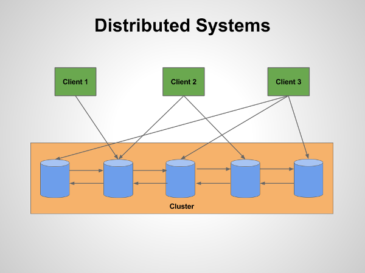

Programming languages for System Programming
- C, C++
- Python, Ruby and others can also ofte call system calls, e.g. fork()
- New: Rust, Swift 2 (once Open Source and available for Linux)
Shortcomings of traditional languages
- Possibility for memory leaks
- Undefined behaviour
- Segfaults
- Security bugs
- very low level (but look at C++11/14)
The JVM is great, but...
- Less control than C/C++
- Overhead (but often very small)
- Gargabe collection (awesome most of the time but can be a show stopper)
C++ sidenote
Use C++11/14
Why Rust?
- Fast
- Low level
- High level
- No GC
Why Rust? There is more!
- Memory safety
- Safe concurrency
- Strong type system
- Great std lib
- Fantastic community
Fork in C
#include <unistd.h>
#include <stdio.h>
#include <sys/types.h> // necessary to compile with -std=c11, otherwise pid_t is not found by gcc
// basic example showing fork(), getpid() and getppid()
int main(int argc, char *argv[])
{
pid_t pid = fork();
if(pid > 0) {
printf("In parent process with pid:%d\n", getpid());
} else if (pid == 0) {
printf("In child process with pid:%d and parent pid:%d\n", getpid(), getppid());
} else {
printf("fork() failed!");
return -1;
}
return 0;
}
Fork in Rust
extern crate nix;
use nix::unistd::{fork, getpid, getppid};
use nix::unistd::Fork::{Parent, Child};
fn main() {
let pid = fork();
match pid {
Ok(Child) => {
println!("in child process with pid: {} and parent pid:{}", getpid(), getppid());
}
Ok(Parent(child_pid)) => {
println!("in parent process with pid: {} and child pid:{}", getpid(), child_pid);
}
// panic, fork should never fail unless there is a serious problem with the OS
Err(_) => panic!("Error: Fork Failed")
}
}
Fork and wait in Rust
extern crate nix;
use nix::unistd::{fork, getpid, getppid};
use nix::unistd::Fork::{Parent, Child};
use nix::sys::wait::waitpid;
use nix::sys::wait::WaitStatus;
fn main() {
let pid = fork();
match pid {
Ok(Child) => {
println!("in child process with pid: {} and parent pid:{}", getpid(), getppid());
} // ignore child here
Ok(Parent(child_pid)) => {
println!("in parent process with pid: {} and child pid:{}", getpid(), child_pid);
let wait_status = waitpid(child_pid, None);
match wait_status {
Ok(WaitStatus::Exited(pid, status)) => {
println!("child process with pid {} has successfull exited with status: {}", pid, status);
},
// panic, must never happen
Ok(_) => panic!("Child still alive, should never happen"),
// panic, waitpid should never fail
Err(_) => panic!("Error: waitpid Failed")
}
},
// panic, fork should never fail unless there is a serious problem with the OS
Err(_) => panic!("Error: Fork Failed")
}
}
Pipes in C
#include <sys/types.h>
#include <sys/wait.h>
#define READ_BUF_SIZE 80
void exit_with_failure(char *message) {
perror(message);
exit(EXIT_FAILURE);
}
int main(void) {
int n;
int pipe_fd[2];
pid_t pid;
char msg [] = "hello from parent\n";
if (pipe(pipe_fd) < 0)
exit_with_failure("pipe error");
if ((pid = fork()) < 0) {
exit_with_failure("fork error");
} else if (pid > 0) {
// in parent, closing read end of pipe
close(pipe_fd[0]);
write(pipe_fd[1], msg, strlen(msg));
} else {
// in child, closing write end of pipe
close(pipe_fd[1]);
char line[READ_BUF_SIZE];
n = read(pipe_fd[0], line, READ_BUF_SIZE);
write(STDOUT_FILENO, line, n);
}
exit(EXIT_SUCCESS);
}
Pipe in Rust
extern crate nix;
use nix::unistd::{fork, read, write, pipe};
use nix::unistd::Fork::{Parent, Child};
use std::str;
fn main() {
let (reader, writer) = pipe().unwrap();
let msg = "hello from parent";
let pid = fork();
match pid {
Ok(Child)=> {
let mut read_buf = [0u8; 32];
let bytes_read = read(reader, &mut read_buf).unwrap();
let msg_received = str::from_utf8(&read_buf[0 .. bytes_read]).unwrap();
println!("received from partent:{:?}", msg_received);
}
Ok(Parent(child_pid)) => {
println!("sending to child with pid:{}", child_pid);
write(writer, msg.as_bytes()).unwrap();
},
Err(_) => panic!("Error: Fork Failed")
}
}
Executing external processes with execvp
extern crate nix;
use nix::unistd::{fork, getpid, getppid, execvp};
use nix::unistd::Fork::{Parent, Child};
use nix::sys::wait::waitpid;
use nix::sys::wait::WaitStatus;
use std::ffi::CString;
fn main() {
let pid = fork();
match pid {
Ok(Child) => {
let command = &CString::new("/bin/cat").unwrap();
let arguments =
&[
CString::new(b"/bin/cat".as_ref()).unwrap(),
CString::new(b"/tmp/file.txt".as_ref()).unwrap(),
CString::new(b"-n".as_ref()).unwrap(),
];
execvp(command, arguments).unwrap();
}
Ok(Parent(child_pid)) => {
println!("in parent process with pid: {} and child pid:{}", getpid(), child_pid);
let wait_status = waitpid(child_pid, None);
match wait_status {
// assert that waitpid returned correct status and the pid is the one of the child
Ok(WaitStatus::Exited(pid, status)) => {
println!("child process with pid {} exited with status: {}", pid, status);
},
// panic, must never happen
Ok(_) => panic!("Child still alive, should never happen"),
// panic, waitpid should never fail
Err(_) => panic!("Error: waitpid Failed")
}
},
// panic, fork should never fail unless there is a serious problem with the OS
Err(_) => panic!("Error: Fork Failed")
}
}
Executing external processes with standard library
use std::process::Command;
// running other program as a child
// this is a verbose solution with pattern matching.
// see run_process2 for a shorter version
fn main() {
let child_process = Command::new("/bin/cat")
.arg("/tmp/file.txt")
.spawn();
match child_process {
Ok(mut child) => {
match child.wait() {
Ok(status) => {
println!("child exited with status:{:?}", status);
}
Err(err) => {
println!("error waiting for child: {:?}", err);
}
}
}
Err(err) => {
println!("error spawning child: {:?}", err);
}
}
}
Executing external processes with standard library - shorter version
use std::process::Command;
// running other program as a child
// shorter version than run_process1 avoiding pattern matching
fn main() {
let mut child_process = Command::new("/bin/catss")
.arg("/tmp/file.txt")
.spawn()
.unwrap_or_else(|error| { panic!("error executing child: {}", error) });
let exit_status = child_process.wait().
unwrap_or_else(|error| { panic!("error waiting on child: {}", error) });
println!("Exit status:{:?}", exit_status);
}
Basic Rust concurrency
- Concurrency support in library
- Memory safety also applies to multi-threading
- Right now mostly low-level support. More coming, also look at crates.io
Simple threads - first broken attempt
use std::thread;
// Broken! An example to show how it does NOT work correctly.
// Don't use this code!!!!! It will not compile!
fn main() {
let strings = vec![
String::from("Rust is awesome"),
String::from("Rust can make system programming easier"),
String::from("multi-core programming is hard but Rust can make it easier")
];
let mut threads = vec![];
for i in 0..strings.len() {
threads.push(thread::spawn(move || {
println!("{:?}", strings[i]); // doesn't compile: capture of moved value: `strings`
}));
}
for thread in threads {
let res = thread.join();
}
}
Simple threads - working with Arc
use std::thread;
use std::sync::Arc;
fn main() {
let strings = vec![
String::from("Rust is awesome"),
String::from("Rust can make system programming easier"),
String::from("multi-core programming is hard but Rust can make it easier")
];
let mut threads = vec![];
let arc_vec = Arc::new(strings);
for i in 0..3 {
let strings_clone = arc_vec.clone();
threads.push(thread::spawn(move || {
println!("{:?}", strings_clone[i]);
}));
}
for thread in threads {
let _ = thread.join();
}
println!("\ndone!\n");
}
The 2 phases when working with shared mutable state
- 1st: WTF am I doing?
- 2nd: WTF have I done?
Shared mutable state - broken
use std::thread;
use std::sync::{Arc, Mutex};
use std::collections::HashMap;
// Broken! An example to show how it does NOT work correctly.
// Don't use this code!!!!! It will not compile!
fn main() {
let strings = vec![
String::from("Rust is awesome"),
String::from("Rust can make system programming easier"),
String::from("multi-core programming is hard but Rust can make it easier")
];
let mut threads = vec![];
let counts: HashMap<String, i32> = HashMap::new();
let strings = Arc::new(strings);
let counts = Arc::new(counts);
for i in 0..3 {
let strings = strings.clone();
let counts = counts.clone();
threads.push(thread::spawn(move || {
let words: Vec<&aml;str> = strings[i].split_whitespace().collect();
for word in words {
let counter = counts.entry(String::from(word)).or_insert(0); // does not compile!
*counter += 1;
}
}));
}
for thread in threads {
let _ = thread.join();
}
println!("counts:\n{:?}", counts);
println!("\ndone!\n");
}
Mutexes: Shared mutable state - working
use std::thread;
use std::sync::{Arc, Mutex};
use std::collections::HashMap;
fn main() {
let strings = vec![
String::from("Rust is awesome"),
String::from("Rust can make system programming easier"),
String::from("multi-core programming is hard but Rust can make it easier")
];
let mut threads = vec![];
let counts: HashMap<String, i32> = HashMap::new();
let strings = Arc::new(strings);
let counts = Arc::new(Mutex::new(counts));
for i in 0..3 {
let strings = strings.clone();
let counts = counts.clone();
threads.push(thread::spawn(move || {
let words: Vec<&str> = strings[i].split_whitespace().collect();
let mut arc_counts = counts.lock().unwrap();
for word in words {
let counter = arc_counts.entry(String::from(word)).or_insert(0);
*counter += 1;
}
}));
}
for thread in threads {
let _ = thread.join();
}
println!("counts:\n{:?}", *counts.lock().unwrap());
println!("\ndone!\n");
}
Don't overdo locks
- Logs are not free!
- Can kill scalability across many cores (Amdahls's Law)
- Use lock-free data structures where possible
- Avoid shared mutable state to avoid locks
- Most important! !!!Do performance tests!!!
Channels
use std::thread;
use std::sync::{Arc};
use std::sync::mpsc;
use std::sync::mpsc::{Sender, Receiver};
fn main() {
let strings = vec![
String::from("Rust is awesome. Rust is fun."),
String::from("Rust can make system programming easier. Rust has no GC."),
String::from("multi-core programming is hard but Rust can make it easier")
];
let mut threads = vec![];
let strings = Arc::new(strings);
let (tx, rx): (Sender<usize> , Receiver<usize>) = mpsc::channel();
for i in 0..3 {
let strings = strings.clone();
let tx = tx.clone();
threads.push(thread::spawn(move || {
let words: Vec<&str> = strings[i].split_whitespace().collect();
let count = words.iter().filter(|x| **x == "Rust").count();
tx.send(count).unwrap();
}));
}
let mut total_count = 0;
for _ in 0..3 {
let count = rx.recv().unwrap();
total_count += count;
}
println!("total count for \"Rust\":{:?}", total_count);
println!("\ndone!\n");
}
Rust can't solve concurrency in distributed systems

Rust can't solve concurrency between more than 1 Rust programm
- File access
- Shared memory
- Other resources
- External locking (e.g. file locking) necessary
What Rust would be great for
- Database (relational or NoSQL)
- Queues, distributed logs
- Web servers
- Big Data incl. stream processing
- VMs
- Monitoring
- Lot's of other things
Recommended books
- A Linux and UNIX System Programming Handbook by Michael Kerrisk
- Linux System Programming, 2nd Edition, by Robert Love